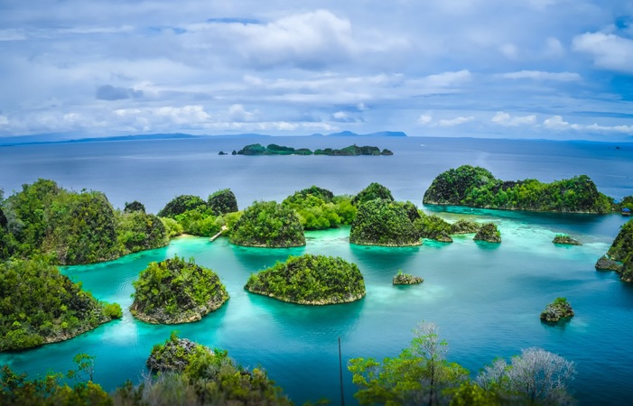
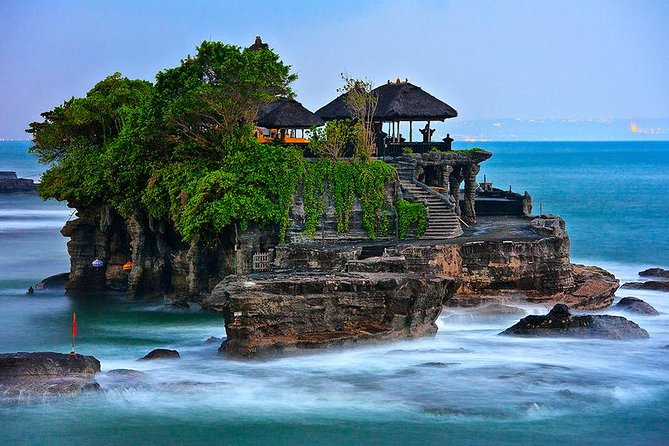

Raja Ampat
Raja Ampat adalah salah satu destinasi wisata Indonesia yang terkenal diakui oleh Unesco. Daya tarik utama dari pulau ini, yang terletak di ujung timur Indonesia, adalah keindahan pemandangan bawah lautnya. Menurut situs Unesco, kecantikan Raja Ampat terletak pada gugusan pulau kecil yang berbatasan dengan laut, teluk, dan formasi batu karst yang menciptakan perpaduan warna yang memukau. Raja Ampat terdiri dari beberapa pulau besar yang berbukit-bukit, dengan yang terbesar adalah Waigeo, Batanta, Salawati, dan Misool, yang disebut sebagai Empat Raja. Mengutip situs Kementerian Luar Negeri, wilayah Empat Raja ini mencakup area yang sangat luas, mencakup 9,8 juta hektar daratan dan laut, dengan keberadaan 540 jenis karang, lebih dari 1.000 jenis ikan, dan 700 jenis moluska. Hal ini menjadikannya perpustakaan hidup yang paling beragam di dunia untuk biota terumbu karang dan kehidupan laut.
Gunung Bromo

Gunung Bromo adalah salah satu gunung berapi yang terkenal di Indonesia. Terletak di Jawa Timur, gunung ini merupakan bagian dari Taman Nasional Bromo Tengger Semeru. Gunung Bromo memiliki ketinggian sekitar 2.329 meter di atas permukaan laut dan dikelilingi oleh lautan pasir yang luas. Salah satu daya tarik utama Gunung Bromo adalah pemandangan matahari terbit yang spektakuler dari puncaknya. Banyak wisatawan datang ke sini untuk menyaksikan momen ini. Selain itu, kawah aktif Gunung Bromo adalah tempat yang mengesankan untuk dijelajahi, dan Anda dapat mencapai puncaknya dengan naik kuda atau berjalan kaki. Dari puncak gunung, Anda dapat melihat panorama indah Taman Nasional Bromo Tengger Semeru, termasuk Gunung Semeru yang lebih tinggi, yang merupakan gunung berapi tertinggi di Jawa. Pengunjung juga dapat menikmati keindahan alam dan budaya di sekitar Gunung Bromo, seperti rumah-rumah adat suku Tengger, serta upacara keagamaan unik yang diadakan oleh masyarakat setempat. Gunung Bromo adalah salah satu destinasi wisata yang sangat populer di Indonesia, terkenal karena keindahan alamnya yang menakjubkan.
Tanah Lot
Tanah Lot adalah salah satu ikon pariwisata yang terkenal di Bali, Indonesia. Tempat ini terletak di pesisir barat daya Bali, dekat dengan kota Tabanan. Yang membuat Tanah Lot sangat terkenal adalah pura laut yang berada di atas batu karang besar yang terletak di tengah laut. Pura Tanah Lot adalah pura Hindu yang sangat suci bagi umat Hindu di Bali. Pura ini didirikan untuk menghormati dewa-dewi laut, terutama Dewa Baruna. Karena lokasinya yang unik, pura ini menjadi salah satu tujuan wisata terpopuler di Bali, terutama saat matahari terbenam, ketika pemandangan pura dan pantai yang dihiasi dengan cahaya matahari terbenam sangat indah. Ketika air laut surut, Anda dapat berjalan ke pura atau sekitarnya untuk lebih mendekati pura Tanah Lot. Selain itu, di sekitar area Tanah Lot, terdapat berbagai toko suvenir dan warung makanan, sehingga pengunjung dapat membeli oleh-oleh atau menikmati hidangan lokal sambil menikmati pemandangan yang menakjubkan. Tanah Lot adalah tempat yang sangat penting secara spiritual dan budaya bagi masyarakat Bali, serta salah satu tempat wisata terbaik di pulau ini, yang menawarkan pengalaman wisata yang memukau bagi para pengunjung.